Welcome to Algebra Transformations
")
I greet you this day,
First: read the notes/eText.
Second: view the videos/multimedia resources.
Third: solve the questions/solved examples.
Fourth: check your solutions with my thoroughly-explained solutions.
Comments, ideas, areas of improvement, questions, and constructive criticisms are welcome.
Thank you for visiting.
Samuel Dominic Chukwuemeka (Samdom For Peace) B.Eng., A.A.T, M.Ed., M.S
Algebra Transformations
Objectives
Students will:
(1.) List the toolbox functions.
(2.) Describe the concept of the transformation of functions.
(3.) Describe the transformations done to a parent function to give the child function.
(4.) Calculate the transformed coordinate of a parent function on the child function.
(5.) Discuss some applications of the transformations of functions.
The Function Family or Parent Functions or Toolbox Functions
Biology: Parents give birth to children
just as in
Mathematics: Parent functions give birth to child functions.
Well, actually, parent functions are transformed to give child functions.
In other words, the transformation of parent functions lead to child functions.
Teacher: What do you usually do to graph any function?
Student: It depends on the function.
We can graph Linear Functions using Table of Values.
We can also graph Linear Functions using the Intercepts - the $x-intercept$ and the $y-intercept$
Teacher: You answered well.
What about Quadratic Functions?
Student: We can graph Quadratic Functions using Table of Values.
We can also graph Quadratic Functions using the Vertex and the Intercepts (the $x-intercept$ and the
$y-intercept$)
Teacher: Very good answer.
What about Cubic Functions? Absolute Value Functions?
Student: We can graph the functions using the Table of Values.
Teacher: Very good.
Why are we learning this topic?
Why Study The Transformation of Functions?
What Does Transformation of Functions Mean?
Rather than using the Table of Values to graph each child function, we can graph only the parent
function using the Table of Values.
Then, we just transform the parent function to give the child function.
Mathematics: There are several transformations done to the parent function in order to give birth
to the child function.
The parent function can move up and down: Vertical Shift
The parent function can move left and right: Horizontal Shift
The parent function can turn over vertically: Vertical Reflection: Reflection across the x-axis
The parent function can turn over horizontally: Horizontal Reflection: Reflection across the
y-axis
The parent function can be stretched vertically: Vertical Stretch
The parent function can be stretched horizontally: Horizontal Stretch
The parent function can be compressed vertically: Vertical Compression
The parent function can be compressed horizontally: Horizontal Compression
So, we can just transform the parent functions to give the child functions.
We can use Table of Values to graph the parent function.
Then, we can use any of the transformations on the parent function to give us the child function.
We can also use a combination of transformations (Transformation Combo) to give child functions.
Food and Nutrition: (Burger King, McDonalds, Jacks, Wendy's): Combo of cheeseburger, fries, and
drink
just as in
Mathematics: Combination(Combo) of transformations to give child functions.
Combination of transformations is when we use more than one transformation to get the child function.
Teacher: What happens when we have several operations in an arithmetic or algebraic
operations?
Student: We use the Order of Operations
Teacher: In that sense, what happens when we have a child function that was got from several
(more than one)
transformation?
Student: I guess we should use the Order of Transformations
Teacher: That is correct!
Student: So, what is the order of transformations when you have more than one transformation?
Teacher: We shall get to that.
However, just know this: the horizontal transformations have preeminence over the vertical
transformations.
Student: Why is that?
Teacher: What do you think?
Horizontal is inside
Vertical is outside
Do you start your journey from "inside" and work your way "outside" OR do you start from "outside"
and
work your way "inside"?
Student: You begin from "inside" to "outside".
Teacher: Correct!
This reminds me of a popular African Proverb
Student: What is it?
Teacher: It states that Charity begins at home
SAMDOM FOR PEACE Pneumonic for the Transformation of Functions
HOSH: Horizontal Shift
HORE: Horizontal Reflection
HOST: Horizontal Stretch
HOCO: Horizontal Compression
VECO: Vertical Compression
VEST: Vertical Stretch
VERE: Vertical Reflection
VESH: Vertical Shift
Parent Functions and Their Properties
The Parent Functions
For now, we shall focus on these parent functions.
The parent functions are:
(1.) Linear Function or Identity Function: $y = x$
(2.) Quadratic Function or Squaring Function: $y = x^2$
(3.) Cubic Function or Cubing Function: $y = x^3$
(4.) Absolute Value Function: $y = |x|$
(5.) Positive Square root Function: $y = \sqrt{x}$
(6.) Cube Root Function: $y = \sqrt[3]{x}$
(7.) Rational Function: $y = \dfrac{1}{x}$
(8.) Natural Exponential Function: $y = e^x$
(9.) Natural Logarithmic Function: $y = \log_e{x}$
(10.) Exponential Function: $y = a^x$ where $a \gt 1$
(11.) Exponential Function: $y = a^x$ where $0 \lt a \lt 1$
(12.) Logarithmic Function: $y = \log_a{x}$ where $a \gt 1$
(13.) Logarithmic Function: $y = \log_a{x}$ where $0 \lt a \lt 1$
(14.) Trigonometric Functions (Several of them.)
| Properties | Linear Function: $y = x$ | Quadratic Function: $y = x^2$ |
|---|---|---|
| Graph |
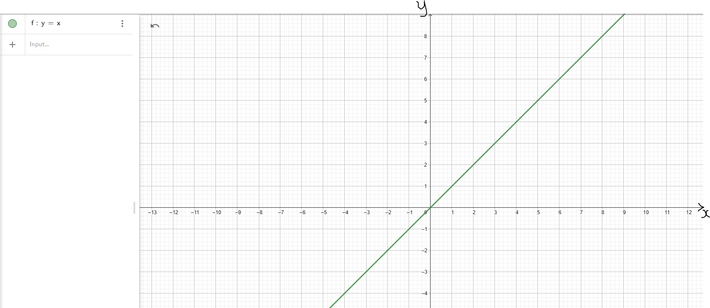 |
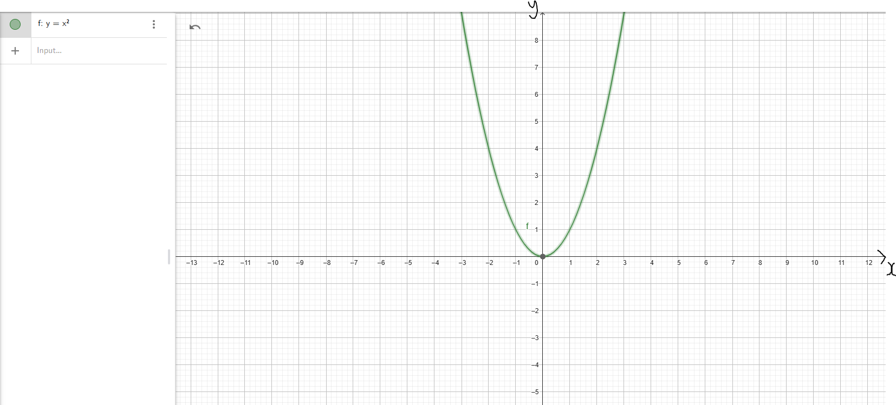 |
| Domain | D = (−∞, ∞) | D = (−∞, ∞) |
| Range | R = (−∞, ∞) | R = [0, ∞) |
| Intercepts |
y-intercept: (0, 0) x-intercept: (0, 0) |
y-intercept: (0, 0) x-intercept: (0, 0) |
| Increasing Interval(s) | f(x) ↑ for x ∈ (−∞, ∞) | f(x) ↑ for x ∈ (0, ∞) |
| Decreasing Interval(s) | Not Applicable | f(x) ↓ for x ∈ (−∞, 0) |
| Symmetry |
f(−x) = −f(x) Odd |
f(−x) = f(x) Even |
| End Behavior |
As x → −∞, y → −∞ As x → ∞, y → ∞ Down/Up |
As x → −∞, y → ∞ As x → ∞, y → ∞ Up/Up |
| Properties | Cubic Function: $y = x^3$ | Absolute Value Function: $y = |x|$ |
|---|---|---|
| Graph |
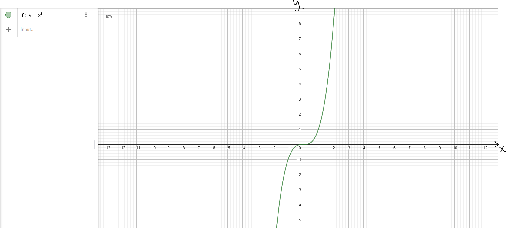 |
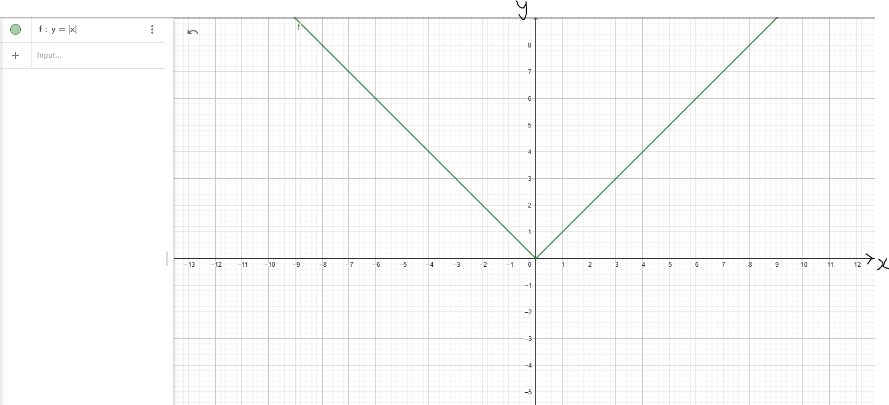 |
| Domain | D = (−∞, ∞) | D = (−∞, ∞) |
| Range | R = (−∞, ∞) | R = [0, ∞) |
| Intercepts |
y-intercept: (0, 0) x-intercept: (0, 0) |
y-intercept: (0, 0) x-intercept: (0, 0) |
| Increasing Interval(s) | f(x) ↑ for x ∈ (−∞, ∞) | f(x) ↑ for x ∈ (0, ∞) |
| Decreasing Interval(s) | Not Applicable | f(x) ↓ for x ∈ (−∞, 0) |
| Symmetry |
f(−x) = −f(x) Odd |
f(−x) = f(x) Even |
| End Behavior |
As x → −∞, y → −∞ As x → ∞, y → ∞ Down/Up |
As x → −∞, y → ∞ As x → ∞, y → ∞ Up/Up |
| Properties | Positive Square Root Function: $y = \sqrt{x}$ | Cube Root Function: $y = \sqrt[3]{x}$ |
|---|---|---|
| Graph |
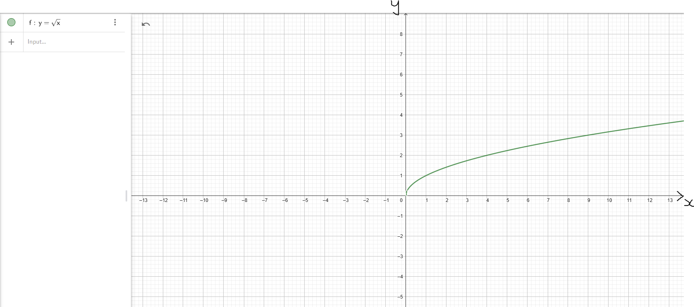 |
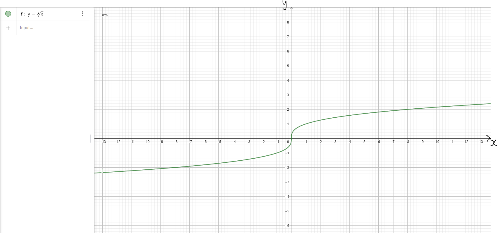 |
| Domain | D = [0, ∞) | D = (−∞, ∞) |
| Range | R = [0, ∞) | R = (−∞, ∞) |
| Intercepts |
y-intercept: (0, 0) x-intercept: (0, 0) |
y-intercept: (0, 0) x-intercept: (0, 0) |
| Increasing Interval(s) | f(x) ↑ for x ∈ (0, ∞) | f(x) ↑ for x ∈ (−∞, ∞) |
| Decreasing Interval(s) | Not Applicable | Not Applicable |
| Symmetry | Neither even nor odd |
f(−x) = −f(x) Odd |
| End Behavior |
x does not approach −∞ As x → ∞, y → ∞ Up |
As x → −∞, y → −∞ As x → ∞, y → ∞ Down/Up |
| Properties | Exponential Function: Case 1: Base > 1 Example: Natural Exponential Function: $y = e^x$ |
Exponential Function: Case 2: 0 < Base < 1 Example: $y = \left(\dfrac{1}{2}\right)^x$ |
|---|---|---|
| Graph |
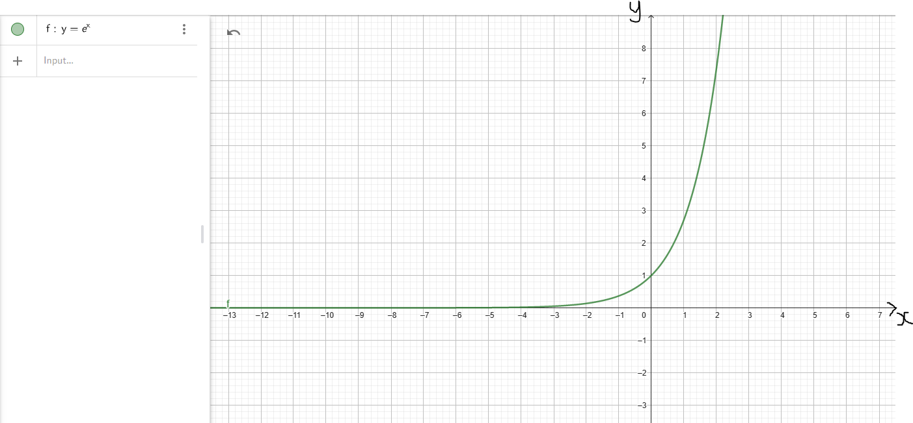 |
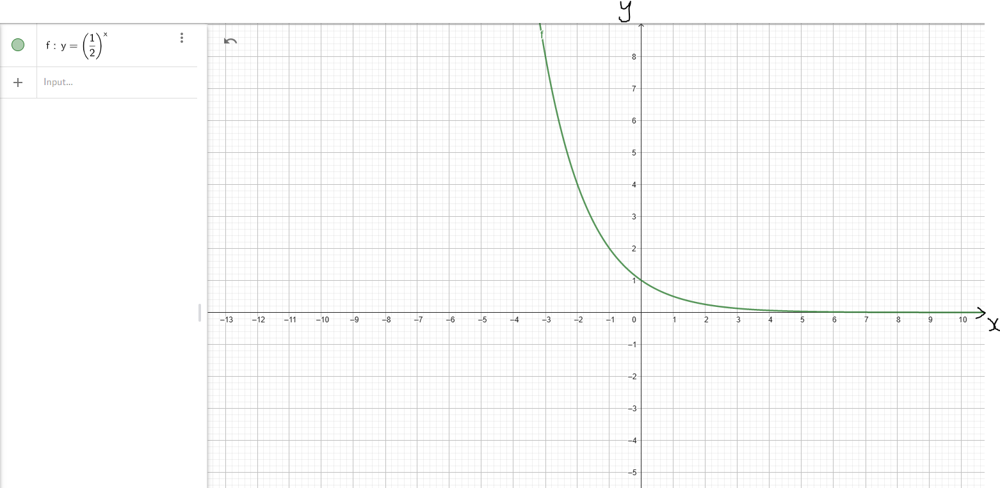 |
| Domain | D = (−∞, ∞) | D = (−∞, ∞) |
| Range | R = (0, ∞) | R = (0, ∞) |
| Intercepts |
y-intercept: (0, 1) x-intercept: Not Applicable |
y-intercept: (0, 1) x-intercept: Not Applicable |
| Increasing Interval(s) | f(x) ↑ for x ∈ (−∞, ∞) | Not Applicable |
| Decreasing Interval(s) | Not Applicable | f(x) ↓ for x ∈ (−∞, ∞) |
| Symmetry | Neither even nor odd | Neither even nor odd |
| End Behavior |
As x → −∞, y → 0 As x → ∞, y → ∞ 0/Up |
As x → −∞, y → ∞ As x → ∞, y → 0 Up/0 |
| Asymptote |
Horizontal Asymptote: y = 0 Graph is asymptotic to the x-axis (the line y = 0) |
Horizontal Asymptote: y = 0 Graph is asymptotic to the x-axis (the line y = 0) |
| Properties | Logarithmic Function: Case 1: Base > 1 Example: Natural Logarithmic Function: $y = \ln x$ |
Logarithmic Function: Case 2: 0 < Base < 1 Example: $y = \log_{\left(\dfrac{1}{2}\right)}x$ |
|---|---|---|
| Graph |
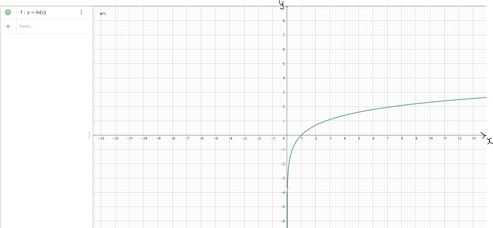 |
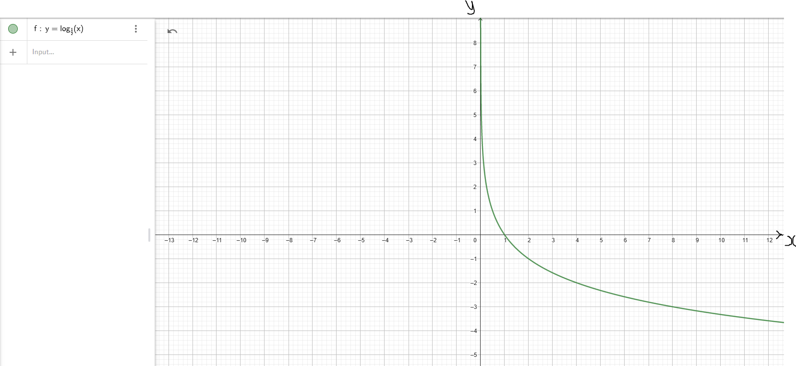 |
| Domain | D = (0, ∞) | D = (0, ∞) |
| Range | R = (−∞, ∞) | R = (−∞, ∞) |
| Intercepts |
y-intercept: Not Applicable x-intercept: (1, 0) |
y-intercept: Not Applicable x-intercept: (1, 0) |
| Increasing Interval(s) | f(x) ↑ for x ∈ (0, ∞) | Not Applicable |
| Decreasing Interval(s) | Not Applicable | f(x) ↓ for x ∈ (0, ∞) |
| Symmetry | Neither even nor odd | Neither even nor odd |
| End Behavior |
As x → 0, y → −∞ As x → ∞, y → ∞ Down/Up |
As x → 0, y → ∞ As x → ∞, y − → Up/Down |
| Asymptote |
Vertical Asymptote: x = 0 Graph is asymptotic to the y-axis (the line x = 0) |
Vertical Asymptote: x = 0 Graph is asymptotic to the y-axis (the line x = 0) |
Teacher: What properties (characteristics) of these parents (each parent function) do you think will:
(a.) be inherited in every child (corresponding child function)?
(b.) change depending on the child (not inherited by the child)?
Let students state/explain the reason for their answers.
Transformations of Functions
Notable Notes on Transformations
(1.) The algebra transformations of functions are the:
shifts (or the translations); similar to sliding/gliding in geometry transformation
reflection; similar to flipping in geometry transformation
stretch; compare with dilation in geometry transformation
compression; compare with dilation in geometry transformation
(2.) For each algebra transformation, there is a vertical type and a horizontal type
This implies that we have:
vertical shift and horizontal shift
vertical reflection and horizontal reflection
vertical stretch and horizontal stretch
vertical compression and horizontal compression
An easy way to remember these is to use my pneumonic (SamDom's Pneumonic): VESH, HOSH, VERE, HORE,
VESH, HOST, VECO, and HOCO
(3.) For each of the eight transformations, any point in the graph of the parent function is changed in
the child function.
However, both coordinates of the point do not change in any single transformation. Recall: A
point has two coordinates
Either the x-coordinate will change or the y-coordinate will change. In any single
transformation, both coordinates do not change. Only one coordinate changes.
If the x-coordinate changes, we name it as: horizontal "type of transformation"
If the y-coordinate changes, we name it as: vertical "type of transformation"
For example, in a:
vertical shift: the y-coordinate changes, the x-coordinate remains
horizontal shift: the x-coordinate changes, the y-coordinate remains
vertical reflection: the y-coordinate changes, the x-coordinate remains
horizontal reflection: the x-coordinate changes, the y-coordinate remains
vertical stretch: the y-coordinate changes, the x-coordinate remains
horizontal stretch: the x-coordinate changes, the y-coordinate remains
vertical compression: the y-coordinate changes, the x-coordinate remains
horizontal compression: the x-coordinate changes, the y-coordinate remains
(4.) For all transformations that are vertical, the number is outside while
for all transformations horizontal, the number is
inside with x
This is what I mean. Ask students to tell the similarities/differences in these functions
Say we have:
$
y = f(x) ...Parent\;\;Function \\[3ex]
k = number \\[5ex]
(I.)\;\; y = f(x) + k ...VESH\;\;k\;\;units\;\;up \\[3ex]
(II.)\;\; y = f(x) - k ...VESH\;\;k\;\;units\;\;down \\[5ex]
(III.)\;\; y = f(x + k) ...HOSH\;\;k\;\;units\;\;left \\[3ex]
(IV.)\;\; y = f(x - k) ...HOSH\;\;k\;\;units\;\;right \\[5ex]
(V.)\;\; y = -f(x) ... VERE \\[3ex]
(VI.)\;\; y = f(-x) ... HORE \\[5ex]
(VII.)\;\; y = kf(x) \;\;\;where\;\;\; k \gt 1 ...VEST\;\;by\;\;factor\;\;of\;\;k
...multiply\;\;y-coordinate\;\;by\;\;k \\[3ex]
(VIII.)\;\; y = kf(x) \;\;\;where\;\;\; 0 \lt k \lt 1 ...VECO\;\;by\;\;factor\;\;of\;\;k
...multiply\;\;y-coordinate\;\;by\;\;k \\[5ex]
(IX.)\;\; y = f(kx) \;\;\;where\;\;\; 0 \lt k \lt 1 ...HOST\;\;by\;\;factor\;\;of\;\;k
...multiply\;\;x-coordinate\;\;by\;\;\dfrac{1}{k} \\[5ex]
(X.)\;\; y = f(kx) \;\;\;where\;\;\; k \gt 1 ...HOCO\;\;by\;\;factor\;\;of\;\;k
...multiply\;\;x-coordinate\;\;by\;\;\dfrac{1}{k} \\[5ex]
$
(5.) For Vertical Shift (VESH):
Given the parent function say: y = f(x)
(a.) If the child function is: y = f(x) + |k|:
(i.) the y-coordinate moves up by k units
(ii.) the x-coordinate remains unchanged
(b.) If the child function is: y = f(x) − |k|:
(i.) the y-coordinate moves down by k units
(ii.) the x-coordinate remains unchanged
Example 1: Let us observe the graphs of the parent function and the child functions
(Discuss the graphs and the points with your students.)
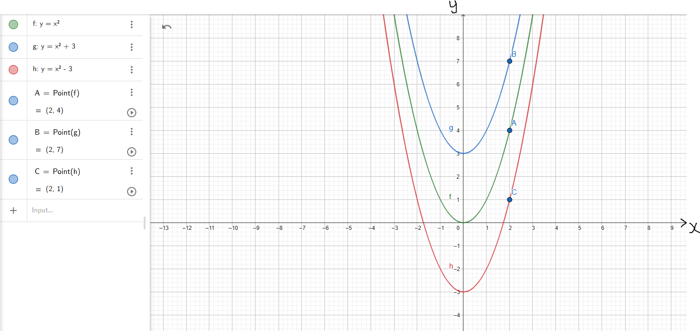
(6.) For Horizontal Shift (HOSH):
Given the parent function say: y = f(x)
(a.) If the child function is: y = f(x + |k|) :
(i.) the x-coordinate moves to the left by k units
(ii.) the y-coordinate remains unchanged
(b.) If the child function is: y = f(x − |k|):
(i.) the x-coordinate moves to the right by k units
(ii.) the y-coordinate remains unchanged
Example 2: Let us observe the graphs of the parent function and the child functions
(Discuss the graphs and the points with your students.)
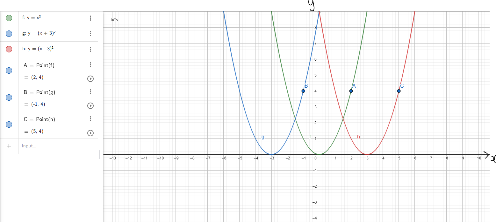
(7.) For Vertical Reflection (VERE):
Compare: When you walk on a bright sunny day and you look down on the ground or in a pool of water, what do you see?
Your shadow (a reflection) with the ground or the pool as the horizontal axis
So, this is a reflection across the horizontal axis
It is the same horizontal axis (same x-coordinate) but different y-coordinate
So, the y-coordinate changes while the x-coordinate remains (same x, different y)
This is known as a Vertical Reflection.
Given the parent function say: y = f(x)
If the child function is: y = −f(x):
(i.) the y-coordinate changes by reflection over the x-axis (horizontal axis)
(ii.) the x-coordinate remains unchanged
Example 3: Let us observe the graphs of the parent function and the child function
(Discuss the graphs and the points with your students.)
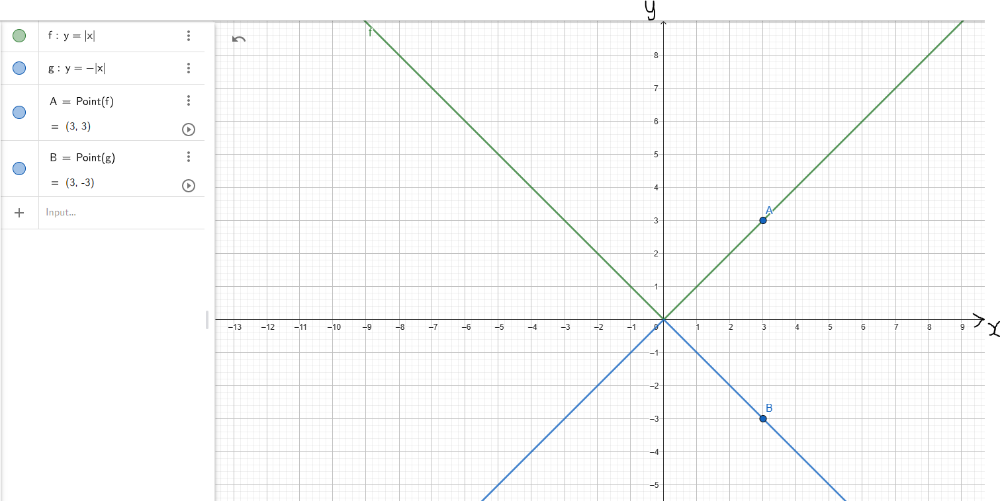
(8.) For Horizontal Reflection (HORE):
Compare: When you stand up (vertically) and look at a mirror fixed to the wall, what do you see?
Your shadow (a reflection) with the mirror as the vertical axis
So, this is a reflection across the vertical axis
It is the same vertical axis (same y-coordinate) but different x-coordinate
So, the x-coordinate changes while the y-coordinate remains (same y, different x)
This is known as a Horizontal Reflection.
Given the parent function say: y = f(x)
If the child function is: y = f(−x):
(i.) the x-coordinate changes by reflection over the y-axis (vertical axis)
(ii.) the y-coordinate remains unchanged
Example 4: Let us observe the graphs of the parent function and the child function
(Discuss the graphs and the points with your students.)
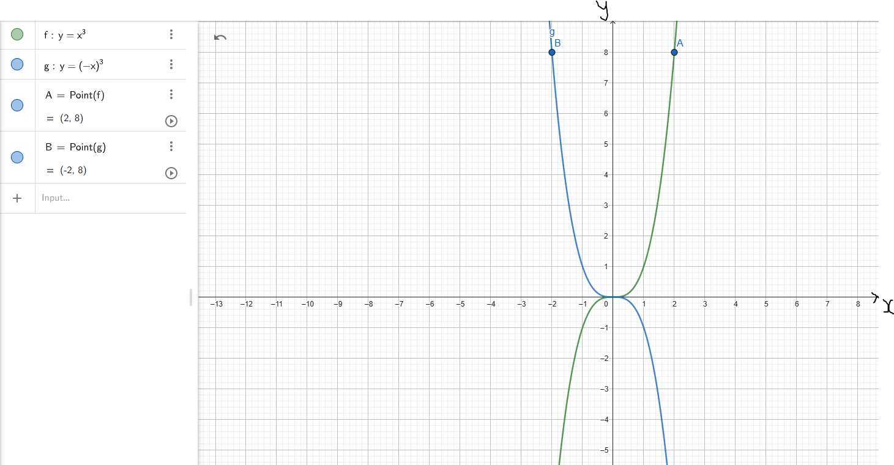
(9.) For Horizontal Stretch (HOST) and Horizontal Compression (HOCO):
If the input (argument) x of a function y = f(x) is multiplied by a positive number k, then the graph of the new function y = f(kx) is obtained by multiplying each x-coordinate of y = f(x) by $\dfrac{1}{k}$
A horizontal compression (narrow) results if k > 1, and a horizontal stretch (widen) results if 0 < k < 1.
Example 5: Let us observe the graphs of the parent function and the child function
(Discuss the graphs and the points with your students.)
Because it is horizontal:
(i.) the y-coordinate changes
(ii.) the x-coordinate remains unchanged
Example 5: Let us observe the graphs of the parent function and the child function
(Discuss the graphs and the points with your students.)
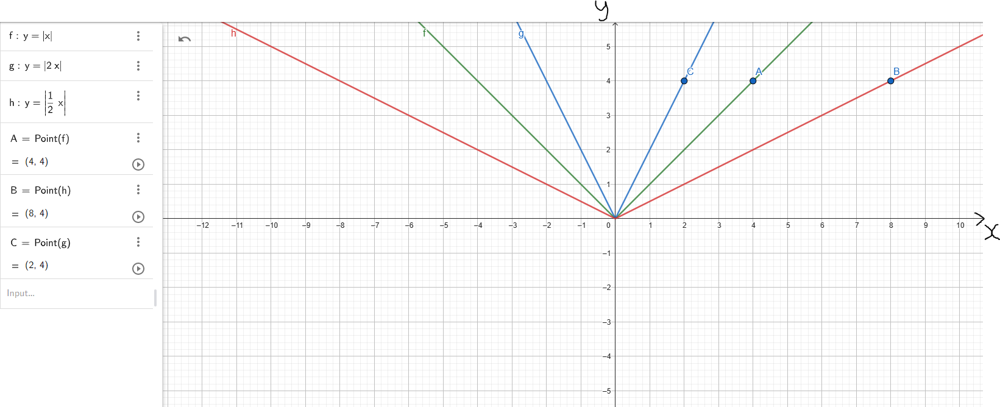
(10.) For Vertical Stretch (VEST) and Vertical Compression (VECO):
If the input (argument) x of a function y = f(x) is multiplied by a positive number k, then the graph of the new function y = kf(x) is obtained by multiplying each y-coordinate of y = f(x) by k
A vertical stretch (widen) results if k > 1, and a vertical compression (narrow) results if 0 < k < 1.
Because it is vertical:
(i.) the x-coordinate changes
(ii.) the y-coordinate remains unchanged
Example 6: Let us observe the graphs of the parent function and the child function
(Discuss the graphs and the points with your students.)
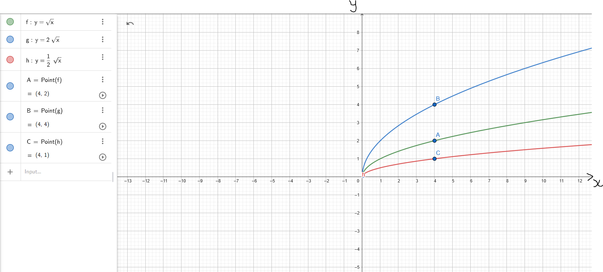
(11.) We also have a combination of transformations of functions.
This is when we have more than one transformation of the parent function.
In other words, the parent undergoes more than one transformation.
In the case of more than one transformation, the horizontal type has the priority over the vertical type.
However, which kind of transformation has priority over the other? Let's check out this formula.
$ f(x) = af[b(x + c)] + d \\[3ex] $ This is the Formula for the Combination of Transformations.
Assume all those variables on the RHS were numbers and you were asked to solve the question, what would you use?
Order of Operations
We would begin with the inside parenthesis: x + c
Then multiply by b
Then multiply by f
Then multiply by a
Then add d to the result
In the same manner, this is how we do transformations.
where:
c is the horizontal shift.
It could be left or right depending on the value of c
This is the first priority.
b is the horizontal compression or horizontal stretch depending on the value of b
This is the second priority.
a is the vertical stretch or vertical compression depending on the value of a
This is the third priority.
d is the vertical shift.
It could be up or down depending on the value of d
This is the last priority.
Let us do some examples.
References
Chukwuemeka, S.D (2016, April 30). Samuel Chukwuemeka Tutorials - Math, Science, and Technology.
Retrieved from https://precalculus.appspot.com/
Coburn, J., & Coffelt, J. (2014). College Algebra Essentials (3rd ed.).
New York: McGraw-Hill
Sullivan, M. (2020). Precalculus. (11th ed.). Pearson.
CrackACT. (n.d.). Retrieved from http://www.crackact.com/act-downloads/
CSEC Math Tutor. (n.d). Retrieved from https://www.csecmathtutor.com/past-papers.html
Desmos. (n.d.). Desmos Graphing Calculator. https://www.desmos.com/calculator
DLAP Website. (n.d.). Curriculum.gov.mt.
https://curriculum.gov.mt/en/Examination-Papers/Pages/list_secondary_papers.aspx
Geogebra. (2019). Graphing Calculator - GeoGebra. Geogebra.org.
https://www.geogebra.org/graphing?lang=en
GCSE Exam Past Papers: Revision World. Retrieved April 6, 2020, from
https://revisionworld.com/gcse-revision/gcse-exam-past-papers
51 Real SAT PDFs and List of 89 Real ACTs (Free) : McElroy Tutoring. (n.d.).
Mcelroytutoring.com. Retrieved December 12, 2022,
from
https://mcelroytutoring.com/lower.php?url=44-official-sat-pdfs-and-82-official-act-pdf-practice-tests-free